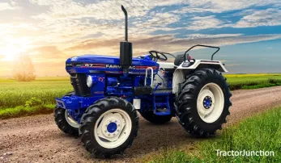

| name | Farmtrac 45 |
| hp | 45 HP to 50 HP depending on the variant |
| Cylinders | 3 cylinders |
| Displacement | 42,868 cc to 3,10c |
| Air Filter | Wet-type / Oil bath type |
| Gearbox | 8 Forward + 2 Reverse constant mesh |
| Brakes | Oil-immersed multi-disc brakes |
| Lifting Capacity | 1,500 kg to 1,800 kg with ADDC system |
| PTO HP | Approx. 38.3 HP with Multi-Speed Reverse PTO (MRPTO) options |
| Fuel Tank | 50 to 60 liters |
| Price Range | Generally priced around ₹6.45 Lakh to ₹7.80 Lakh |